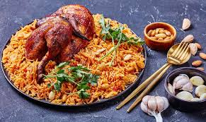

Kabsa

Description
Kabsa (kabsah) is an Arab mixed rice dish that originates from Yemen.[1] It is commonly regarded as a national dish in all the countries of the Arabian Peninsula. It can also be found in regions such as southern Iran, Gaza in Palestine,[1] and the Malabar Coast of India.
Ingredients
- chicken
- rice
- water
- onion
- tomato
- oil
steps
- put oil on heat
- add onion on oil wait until it gets browny and add the chicken
- add tomato then move every thing and add salet
- add water let them cock for 30 minutes
- add rice and let it cock for 20 minutes
- serve it
Return to Home